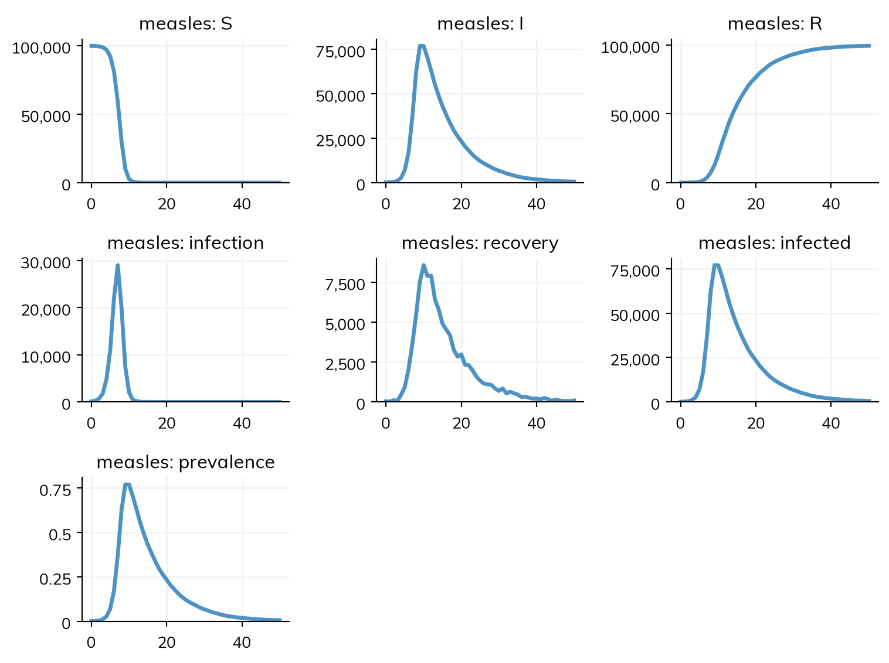
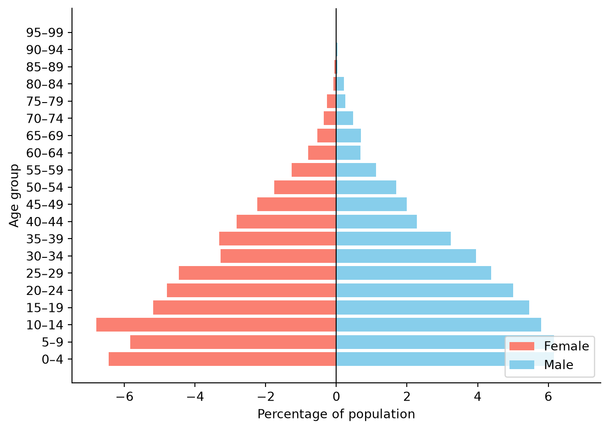
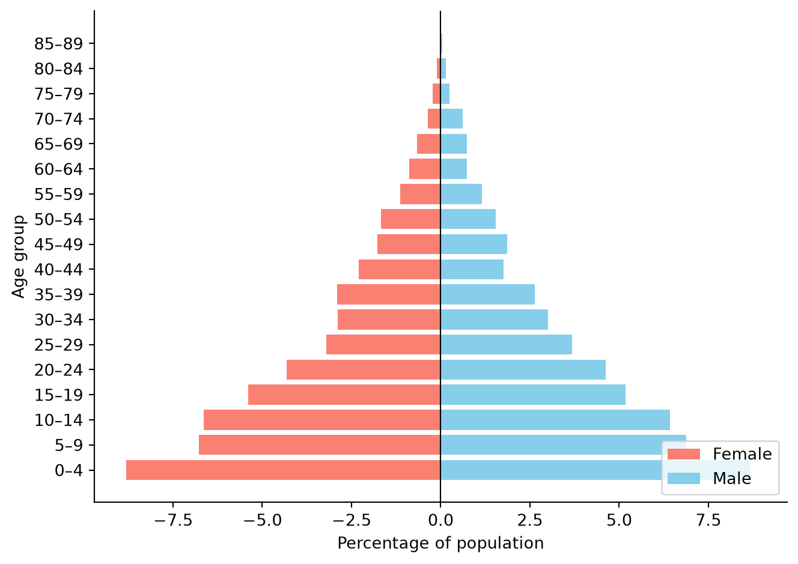
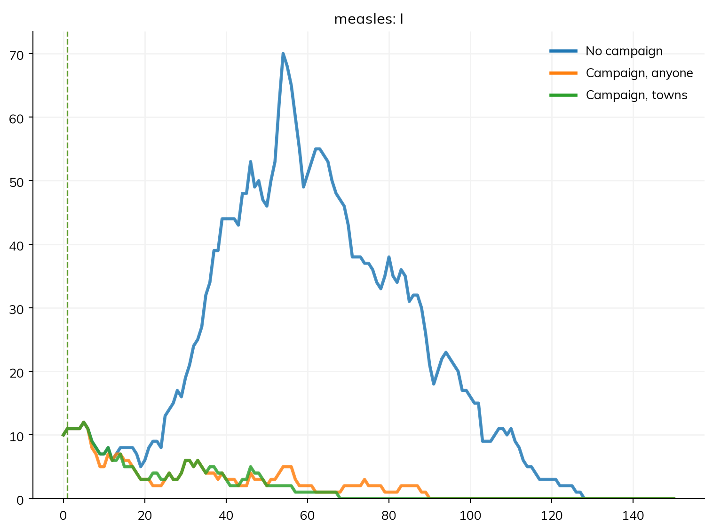
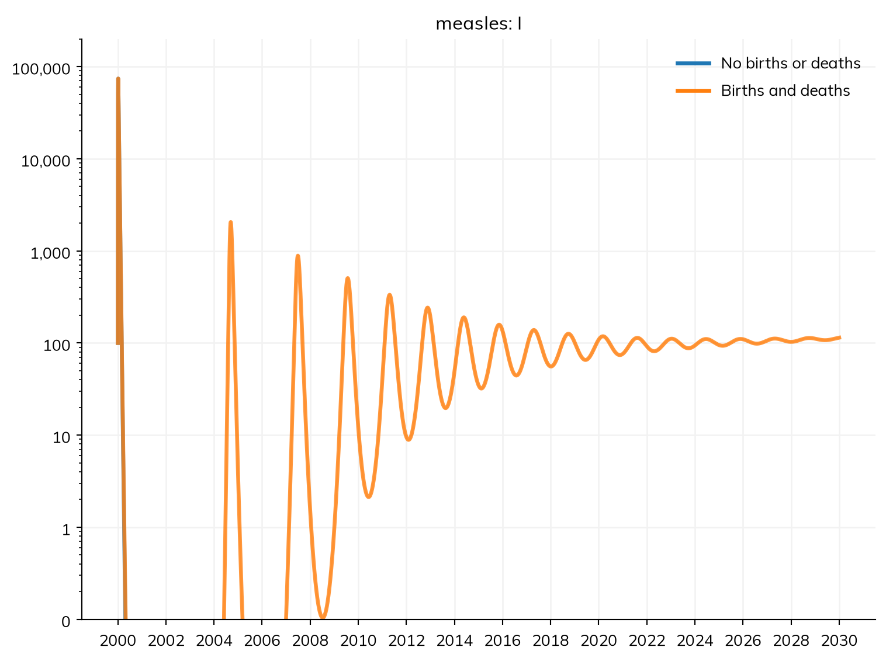
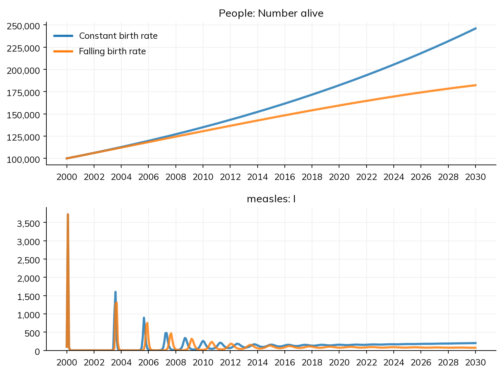
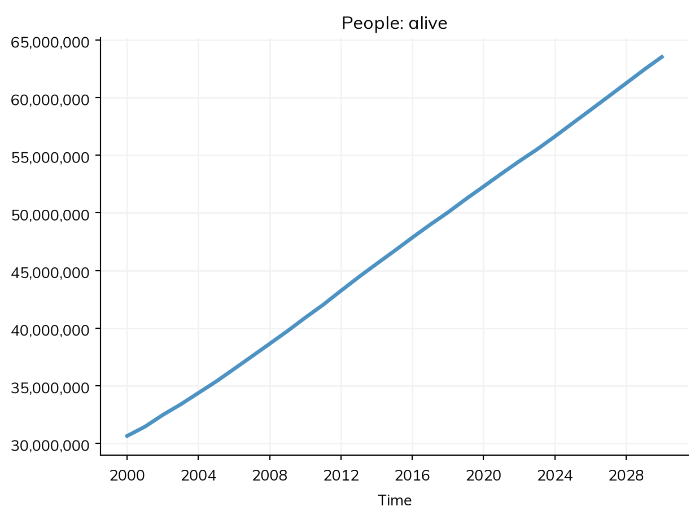
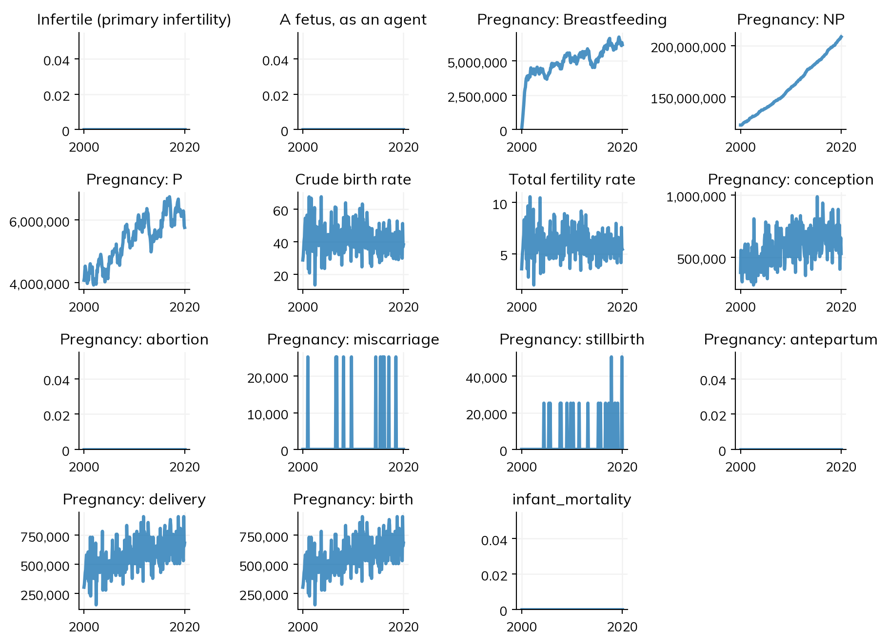

import starsim as ss
S, I, R = ss.states('S I R')
infection = S >> I @ ss.perday(1.9)*I # β = 1.9 per day (typed, beside annual demographics)
recovery = I >> R @ ss.days(8) # Infectious for 8 days on average
measles = ss.Disease(infection, recovery, init_prev=0.001)People and demographics
Every model has a population: its size, the ages and sex of its people, and anything else about them the model needs. Over years, births, deaths, and aging change it.
This page covers the population at the start, births and deaths, pregnancy, and, for a model run as agents, the People object. How agents are kept in arrays and indexed is in Array indexing, who meets whom in Mixing, and the data by place that comes with Starsim in Places and data.
The examples use the measles model from the tutorials:
The population at the start
How many people
total_pop= is the number of people in the population. A model run as compartments needs nothing else:
sim = ss.Sim(measles, total_pop=100_000, stop=ss.days(50))
sim.run()Sim: measles, 100,000 people, as an ODE, days 0 to 50
measles: R0 = 15.2, with 100 infectious at the start
Done in 0.0029 s; measles: 99,900 infections; at most 74,112 infectious, on day 6Sim(n=100000; 0—50; diseases=measles)As agents, n_agents= is the number of agents. Given both, each agent stands for total_pop/n_agents people, here 10, and results are given in people, not agents:
sim = ss.Sim(measles, total_pop=100_000, n_agents=10_000, stop=ss.days(50))
sim.run()
sim.plot()Sim: measles, as 10,000 agents, each 10 people, days 0 to 50
Running as agents: n_agents was given
Note: consider a shorter step (e.g. dt=ss.days(0.25)): each step is 1 day, and infection transmits at up to 1.9 per day (with everyone infectious), 85% in a step (and I is fast too). Taking whole steps, agents may differ from the ODE by an amount of that order; sim.check_dt() shows how much it matters Done in 0.046 s; measles: 99,900 infections; at most 77,040 infectious, on day 9
Without either, a model has 10,000 people. Fewer agents than people make a model faster, but add noise from chance; see Branching and rescaling.
Ages and sex
As agents, each person has an age and a sex. By default, agents have the ages of the world’s population in 2024, and an even chance of being female (ss.People(n_agents, p_female=0.49) for another fraction). A compartmental model split into age groups without a fraction for each takes the fractions from the same ages, and describe() marks them as guessed.
The population of a country is ss.population(): its size, its ages, and the fraction of women, from the UN World Population Prospects (see Places and data). The sim takes its size from it, under any solver:
kenya = ss.population('Kenya', year=2024)
print('Population of Kenya in 2024:', round(kenya.named.total))
sim = ss.Sim(measles, people=ss.population('Kenya', year=2024, n_agents=5000), stop=ss.days(50))
sim.init()
sim.people.plot_ages();Population of Kenya in 2024: 56571298
Sim: measles, as 5,000 agents, each 11,300 people, days 0 to 50
Running as agents: people were given
Note: consider a shorter step (e.g. dt=ss.days(0.25)): each step is 1 day, and infection transmits at up to 1.9 per day (with everyone infectious), 85% in a step (and I is fast too). Taking whole steps, agents may differ from the ODE by an amount of that order; sim.check_dt() shows how much it matters
In a compartmental model, ages matter only once the model is split into age groups (measles.stratify(age=[0, 15, 65]); see Stratification), which then take their fractions from the named population.
Ages can also come from data of your own, with ss.People(n_agents, age_data=...): a table (or CSV file) with a column age (the lower edge of each age group) and a column value (the number or fraction of people in it):
ppl = ss.People(5000, age_data='test_data/nigeria_age.csv')
sim = ss.Sim(measles, people=ppl, stop=ss.days(50))
sim.init()
sim.people.plot_ages();Sim: measles, as 5,000 agents, days 0 to 50
Running as agents: people were given
Note: consider a shorter step (e.g. dt=ss.days(0.25)): each step is 1 day, and infection transmits at up to 1.9 per day (with everyone infectious), 85% in a step (and I is fast too). Taking whole steps, agents may differ from the ODE by an amount of that order; sim.check_dt() shows how much it matters
A sim copies the people it is given when it is built, so look at sim.people afterwards, not at ppl.
Properties of people
A model refers to a property of people with ss.person: ss.person.age, ss.person.female, or a property of your own. ss.person.age < 5 is a condition, which picks out people, for example to say who an intervention reaches:
ss.vaccinate(efficacy=0.9, who=ss.person.age < 5, when=ss.days(10), coverage=0.8) # Vaccinates children under 5A property of your own is given to ss.People as a state, with a value for each agent, which can be drawn from a distribution, and can be used in a rate as well as in a condition. Here 30% of people live in towns, where the rate of infection is doubled; two campaigns give the same number of doses, one to anyone and one to people in towns:
urban = ss.BoolState('urban', default=ss.bernoulli(p=0.3))
ppl = ss.People(10_000, extra_states=urban)
infection = S >> I @ 1.9*(1 + ss.person.urban)*I # Twice the rate in towns
measles_towns = ss.Disease(infection, recovery, init=dict(R=0.92), init_prev=0.001, name='measles')
anyone = ss.vaccinate(efficacy=0.9, when=ss.days(1), coverage=0.27, name='campaign')
towns = ss.vaccinate(efficacy=0.9, who=ss.person.urban, when=ss.days(1), coverage=0.9, name='campaign')
base = ss.Sim(measles_towns, people=ppl, stop=ss.days(150), verbose=0)
msim = ss.parallel({
'No campaign': base,
'Campaign, anyone': base.new(interventions=anyone),
'Campaign, towns': base.new(interventions=towns),
})
msim.plot('measles.I')
for sim in msim.sims:
print(sim.label, '- infections:', round(sim.results.measles.infection.sum()))
No campaign - infections: 367
Campaign, anyone - infections: 35
Campaign, towns - infections: 30ss.person is read when the sim is built, so the property can be given after the model is written. In a compartmental model, people have no properties of their own; the same property is a stratification (measles_towns.stratify(urban={False: 0.7, True: 0.3})), and the same rates and conditions then work on groups.
Births and deaths
Births and deaths for the whole population go in demographics=. ss.birth(rate=r) adds people at a crude birth rate r into the first state of each disease (here S); ss.death(rate=r) removes people from every state at rate r. Here is measles over 30 years, with 30 births and 10 deaths per 1,000 people a year. The “Explicit” tab declares the same births and deaths in the disease itself, as transitions, which is what demographics= does with them:
import starsim as ss
S, I, R = ss.states('S I R')
infection = S >> I @ ss.perday(1.9)*I # β = 1.9 per day (typed, beside annual demographics)
recovery = I >> R @ ss.days(8) # Infectious for 8 days on average
measles = ss.Disease(infection, recovery, init_prev=0.001)
demographics = [
ss.birth(rate=ss.peryear(0.03)), # 30 births per 1,000 people per year
ss.death(rate=ss.peryear(0.01)), # 10 deaths per 1,000 people per year
]
pars = dict(total_pop=100_000, start='2000', stop='2030', dt=ss.days(1), verbose=0)
sim = ss.Sim(measles, demographics=demographics, **pars)
msim = ss.parallel({'No births or deaths': ss.Sim(measles, **pars), 'Births and deaths': sim})
fig = msim.plot('measles.I', log=True, do_show=False) # A log scale shows the later epidemics, which are far smaller than the first
fig.axes[0].set_ylim(0.1, 200_000)
fig

library(starsim)
states("S I R")
infection <- Transition(S, I, rate = ss$perday(1.9) * I) # β = 1.9 per day (typed, beside annual demographics)
recovery <- Transition(I, R, dur = days(8)) # Infectious for 8 days on average
measles <- Disease(infection, recovery, init_prev = 0.001)
demographics <- list(
ss$birth(rate = ss$peryear(0.03)), # 30 births per 1,000 people per year
ss$death(rate = ss$peryear(0.01)) # 10 deaths per 1,000 people per year
)
make_sim <- function(...) { # A sim with these settings, and any others given
Sim(measles, total_pop = 100000, start = "2000", stop = "2030", dt = days(1), verbose = 0, ...)
}
msim <- parallel(list("No births or deaths" = make_sim(), "Births and deaths" = make_sim(demographics = demographics)))
fig <- msim$plot("measles.I", log = TRUE, do_show = FALSE) # A log scale shows the later epidemics, which are far smaller than the first
fig$axes[[1]]$set_ylim(0.1, 200000) # The first axes (R counts from 1)
figS, I, R = ss.states('S I R')
measles_demog = ss.Disease(
infection = S >> I @ ss.perday(1.9)*I,
recovery = I >> R @ ss.days(8),
births = ss.birth(S, rate=ss.peryear(0.03)), # Births into S, the first state, as a transition of the disease
deaths = ss.death(rate=ss.peryear(0.01)), # Deaths from every state
init_prev = 0.001,
name = 'measles',
)
sim_explicit = ss.Sim(measles_demog, **pars) # No demographics= needed: the disease has them
msim_explicit = ss.parallel({'No births or deaths': ss.Sim(measles, **pars), 'Births and deaths': sim_explicit})
fig = msim_explicit.plot('measles.I', log=True, do_show=False)
fig.axes[0].set_ylim(0.1, 200_000)
fig

The births and deaths are transitions of the disease, so they are among its results (sim.results.measles.births) and in describe(). In an ODE, a fraction of an infectious person is enough for the epidemics to recur, and the sim warns when the number infectious falls below one; a stochastic solver shows whether the infection would have died out (see Solvers and backends).
A death from a disease alone is a transition of the disease: ss.death(I, rate=ss.peryear(0.1)) (see Diseases). demographics=True adds births and deaths at default rates (20 and 10 per 1,000 people a year). Instead of a rate, ss.birth() can take when=, a transition whose flow drives the births: ss.birth(when=pregnancy.delivery, children=2) gives twins at each delivery.
A birth or death rate can change over time, with ss.timeseries() (see Parameters). Here the birth rate falls from 40 to 20 per 1,000 a year over 30 years:
deaths = ss.death(rate=ss.peryear(0.01))
constant = ss.birth(rate=ss.peryear(0.04))
falling = ss.birth(rate=ss.timeseries({'2000-01-01': ss.peryear(0.04), '2030-01-01': ss.peryear(0.02)}, interpolation='linear'))
pars = dict(total_pop=100_000, start='2000', stop='2030', dt=ss.months(1), verbose=0)
msim = ss.parallel({
'Constant birth rate': ss.Sim(measles, demographics=[constant, deaths], **pars),
'Falling birth rate': ss.Sim(measles, demographics=[falling, deaths], **pars),
})
msim.plot(['alive', 'measles.I'])
library(starsim)
states("S I R")
measles <- Disease(
infection = Transition(S, I, rate = ss$perday(1.9) * I), # β = 1.9 per day (typed, beside annual demographics)
recovery = Transition(I, R, dur = days(8)), # Infectious for 8 days on average
init_prev = 0.001
)
deaths <- ss$death(rate = ss$peryear(0.01))
constant <- ss$birth(rate = ss$peryear(0.04))
falling <- ss$birth(rate = ss$timeseries(list("2000-01-01" = ss$peryear(0.04), "2030-01-01" = ss$peryear(0.02)), interpolation = "linear"))
make_sim <- function(...) { # A sim with these settings, and any others given
Sim(measles, total_pop = 100000, start = "2000", stop = "2030", dt = ss$months(1), verbose = 0, ...)
}
msim <- parallel(list(
"Constant birth rate" = make_sim(demographics = list(constant, deaths)),
"Falling birth rate" = make_sim(demographics = list(falling, deaths))
))
msim$plot(c("alive", "measles.I"))Rates from data
Birth and death rates usually come as data: crude birth rates by year, and death rates by year, sex, and age. The modules ss.Births and ss.Deaths take these, or a country by name for the UN’s rates. Here is the population of Kenya from 2000, checked against the UN’s own estimates:
kenya = dict(
people = ss.population('Kenya', year=2000, n_agents=20_000),
demographics = [ss.Births(birth_rate='Kenya'), ss.Deaths(death_rate='Kenya')],
start = 2000,
stop = 2030,
dt = ss.years(1),
)
sim = ss.Sim(**kenya)
sim.run()
sim.results.alive.plot()
for year in [2010, 2020, 2030]:
print(year, 'model:', round(sim.results.alive[year - 2000]), 'UN:', round(ss.population('Kenya', year=year).named.total))Sim: births, deaths, as 20,000 agents, each 1,530 people, years 2000 to 2030
Note: unit='year' (from dt) Done in 0.12 s
2010 model: 40915919 UN: 41598566
2020 model: 52293624 UN: 52217334
2030 model: 63538032 UN: 63102246These modules run as agents. They give each newborn a mother (people.parent), and can run on a step of their own (e.g. dt=ss.years(1) in a model whose diseases step daily). rel_birth= and rel_death= multiply all the rates. The UN’s totals include migration, which this model leaves out (see Migration).
Data of your own
Rates of your own are given as a table: crude birth rates with columns Year and CBR (ss.Births(birth_rate=df)), and death rates with columns Time, Sex (Male or Female), AgeGrpStart, and mx (ss.Deaths(death_rate=df)). For other column names, give columns=. Each rate holds from its year until the next.
Per person or per 1,000. For births, deaths, conceptions, and migration, a rate’s size says what it is per: a rate above 1 a year is per 1,000 people, and one of 1 or below is per person (for a table, judged by its median). So ss.Births(birth_rate=35) and ss.peryear(0.035) are both 35 per 1,000 people a year. rate_per=1000 or rate_per=1 says which, for rates whose size could mislead (such as net migration of under 1 per 1,000).
Life tables
A life table says how many of a cohort die at each age. ss.death(lifetable=ss.lifetable(ages=ages, deaths=dx)) takes one and runs under every solver, as a death rate for each of its age bands; ss.Deaths(lifetable=...) also takes a table for each sex and year. The UN’s complete life tables come from starsim_data (ssd.download('Kenya', which='life_table')). Death rates by age, or a life table, keep the population from growing implausibly old, as it does with a constant death rate.
Migration
Net migration (arrivals less departures) is ss.migration(rate=r), a rate of either sign: a positive rate brings people in, at the population’s ages, and a negative one takes them out (as agents, recorded as emigrated, not as dead). ss.migration(rate='Albania') takes the UN’s rates for a country. Arrivals and departures can also be given alone, as ss.immigration(n=n) (people per unit time) and ss.emigration(rate=r); in a disease, they can be for one state, e.g. ss.immigration(I, n=ss.peryear(2)) for two imported infections a year.
Here is Albania from 2000, with and without the UN’s rates of net migration:
def make_albania(migration):
""" Albania's population from 2000, with or without migration """
demographics = [ss.Births(birth_rate='Albania'), ss.Deaths(death_rate='Albania')] + migration
return ss.Sim(people=ss.population('Albania', year=2000, n_agents=10_000), demographics=demographics, start=2000, stop=2030, dt=ss.years(1), verbose=0)
msim = ss.parallel({'Births and deaths': make_albania([]), 'With emigration': make_albania([ss.migration(rate='Albania')])})
for year in [2010, 2020, 2030]:
model = [round(sim.results.alive[year - 2000]/1e6, 2) for sim in msim.sims]
print(year, '- millions without emigration:', model[0], 'with:', model[1], 'UN:', round(ss.population('Albania', year=year).named.total/1e6, 2))2010 - millions without emigration: 3.47 with: 2.89 UN: 2.93
2020 - millions without emigration: 3.65 with: 2.68 UN: 2.87
2030 - millions without emigration: 3.73 with: 2.55 UN: 2.67The UN’s rates are net, so emigrants are chosen at random. For movement between places within a model, see Movement between places.
Aging
People age if the model has births or deaths (or with aging=True in the sim). In a compartmental model stratified by age, people move from each age group to the next, at a rate set by its width (or, for a named population, by its age pyramid).
Pregnancy
ss.Pregnancy models pregnancy itself, for models where it matters: mother-to-child transmission, maternal health, or contraception. Women conceive at age-specific fertility rates; a pregnancy ends in a delivery, a loss, or a maternal death; and each delivery adds a child, whose mother is known. It runs as agents, and takes the place of ss.Births (given both, their births add up, with a warning). Fertility rates come from the UN for a place by name (fertility_rate='Nigeria'), or as a table (columns Time, AgeGrp or AgeGrpStart, and ASFR):
import pandas as pd
fertility = pd.read_csv('test_data/nigeria_asfr.csv') # Age-specific fertility rates by year and single year of age
pregnancy = ss.Pregnancy(fertility_rate=fertility) # Per 1,000 women per year, as the UN's; or fertility_rate='Nigeria'
nigeria = dict(
people = ss.population('Nigeria', year=2000, n_agents=5000),
demographics = [pregnancy, ss.Deaths(death_rate='Nigeria')],
start = 2000,
stop = 2020,
dt = ss.months(1),
verbose = 0,
)
sim = ss.Sim(**nigeria)
sim.run()
sim.results.pregnancy.plot()
Pregnancy is declared, with states NP (not pregnant) and P (pregnant, with P.time_in the gestational age), so its transitions, such as conception, delivery, and birth (listed in the appendix), are events and results that other modules can use. Contraception, for example, is a modifier of conception, and an intervention can reach pregnant women (who=pregnancy.P) or newborns (when=pregnancy.birth; see Interventions):
pregnancy = ss.Pregnancy(fertility_rate=ss.peryear(0.08)) # 80 conceptions per 1,000 women a year, at ages 15-49
contraception = ss.modify(pregnancy.conception, multiply=0.5, when=ss.schedule(start='2005')) # Halves conception from 2005
pars = dict(demographics=pregnancy, n_agents=5000, start='2000', stop='2010', dt=ss.months(1), verbose=0)
scenarios = {
'No contraception': ss.Sim(**pars),
'Contraception': ss.Sim(**pars, interventions=contraception),
}
for label, sim in scenarios.items():
sim.run()
print(label, 'births:', sim.results.pregnancy.birth.sum())No contraception births: 1053.0
Contraception births: 821.0Mother-to-child transmission uses the networks that pregnancy makes between mother and child; see Mixing. The other parameters of ss.Pregnancy (losses, maternal and infant deaths, twins, preterm birth, breastfeeding, and more) are in the appendix. Each woman’s parity, n_pregnancies, lactating (breastfeeding), infertile, and the time since her last live birth (pregnancy.since_birth) can be read in conditions, e.g. for lactational amenorrhea:
lam = ss.modify(pregnancy.conception, multiply=0.1, who=pregnancy.lactating & (pregnancy.since_birth < ss.months(6)))pregnancy.attr(name, dist, when='conception') draws a value for each woman at each pregnancy (e.g. the gestational age of her first antenatal visit), for conditions such as pregnancy.P & (pregnancy.P.time_in >= visit), and pregnancy.add_callback(pregnancy.birth, fn) calls code of your own at each event.
People as agents
As agents, sim.people holds every agent: its properties, and the states of every module in the sim, in arrays with one value per agent (see Array indexing). These are the most useful (see People for all of them):
| Name | What it is |
|---|---|
people.alive, people.dead, people.female, people.male |
Who is alive, has died, is female, or is male, as states (.uids for their UIDs) |
people.age |
Each agent’s age, in years |
people.ti_dead, people.ti_removed |
The step on which the agent died, or left for another reason such as emigration (NaN otherwise) |
people.parent |
The UID of each agent’s mother, for agents born in the run (-1 for none) |
people.scale |
The number of people the agent stands for, relative to the others (1 unless set) |
people.causes, people.cause_of_death |
The causes of death by name, and the cause of each agent’s death (its position in causes; -1 for none) |
people.n |
The number of people alive, under every solver: as agents, the people the agents stand for |
len(people), people.auids |
The number of agents taking part (alive and not removed), and their UIDs |
people.died_of(module) |
The agents who died of a module in the step just finished, for code in a module |
people.keys(), people.brief() |
The names of the states, and a one-line summary |
people.to_df(), people.get_person(uid) |
A table with a row for each agent and a column for each state; everything about one agent |
people.plot(), people.plot_ages() |
A histogram of each state (key= for some of them); the age pyramid (absolute=True for numbers rather than fractions) |
Each module adds its own states, under its name, when the sim is initialized: a declared disease adds each of its states (sim.people.measles.I), and each person’s relative susceptibility and transmissibility (rel_sus and rel_trans). A property that belongs to one module is best defined in that module, with define_states() (see Custom modules); one that several modules use (such as urban) is best given to ss.People with extra_states=.
Looking at people
A sim keeps its people after it has run, and so do the runs of ss.parallel() (msim.sims['label'][0].people), unless they were shrunk to save memory (sim.shrink(), ss.parallel(..., shrink=True), or a finished sim saved to a file). Of each declared disease, agents keep only the times and histories the model reads: the time each agent entered a state (ti_I) is kept when something in the sim reads it, such as a duration of the state, and ss.Sim(keep_times=True) keeps them all (reading one that wasn’t kept raises an error that says so). For the time people spent in a state, use the state’s stays (e.g. np.mean(sim.diseases.measles.I.stays)).
sim.people.to_df() gives a table, e.g. for the mean age of women and of men:
sim = ss.Sim(measles, n_agents=1000, stop=ss.days(50), verbose=0)
sim.run()
df = sim.people.to_df()
df.groupby('female').age.mean()female
False 33.327446
True 34.606384
Name: age, dtype: float32sim.people.get_person(10) gives everything about the agent with UID 10:
sim.people.get_person(10)Person({
'uid': 10,
'slot': 10,
'alive': True,
'age': 27.815662,
'female': False,
'ti_dead': nan,
'ti_removed': nan,
'scale': 1.0,
'cause_of_death': -1,
'measles.rel_sus': 1.0,
'measles.rel_trans': 1.0,
'measles.S': False,
'measles.I': False,
'measles.ti_I': 8.0,
'measles.shift_I': -1,
'measles.ti_left_I': 10.0,
'measles.ti_exit_I': nan,
'measles.exit_I': 0,
'measles.R': True,
})Deaths by cause
Each agent who dies has one cause, the module whose death it was: its name is in people.causes, and its position in that list in people.cause_of_death:
measles_deaths = ss.Disease(S >> I @ ss.perday(1.9)*I, I >> R @ ss.days(8), ss.death(I, rate=ss.perday(0.002)), init_prev=0.001, name='measles')
deaths = ss.Deaths(death_rate=ss.peryear(0.01), name='other') # Deaths from other causes, 10 per 1,000 people a year
sim = ss.Sim(measles_deaths, demographics=deaths, n_agents=10_000, stop=ss.days(50), verbose=0)
sim.run()
ppl = sim.people
codes = ppl.cause_of_death[ppl.dead.uids] # The cause of each death
for code, cause in enumerate(ppl.causes):
print('Deaths from', cause, '-', (codes == code).sum())Deaths from other - 13
Deaths from measles - 159In a compartmental run
In a compartmental run there are no agents: sim.people has one row for each group the model is split into. Results, describe(), sim.people.n, and conditions such as who=ss.person.age < 5 (in a model stratified by age) work the same either way; a property of each person, such as sim.people.age, raises an error saying to stratify by it or run as agents.
Further reading
- The API reference: People, Arrays, and ss.Births, ss.Deaths, and ss.Pregnancy
- UN World Population Prospects: the source of the birth rates, death rates, and age structures that come with Starsim
- EpiModel: Demography in network models: births, deaths, and aging in open-population network models
- Mesa: AgentSet: agents as Python objects, the alternative to keeping agents in arrays
Appendix: the demographic building blocks
Starsim has two kinds of demographics: declared transitions (lower case), which work under every solver, and modules (capitalized), which run as agents and take data by place.
| Building block | What it does | Data by place | Runs under | Results |
|---|---|---|---|---|
ss.birth(rate=) |
Births at a crude rate (or a time series of rates), into each disease’s first state; rate='Kenya' is ss.Births(birth_rate='Kenya') |
No (a place by name is ss.Births) |
Every solver (agents, for a place) | Each disease’s births |
ss.birth(when=, children=) |
children for each person who goes through a transition (e.g. a delivery) |
No | Agents (for now) | The transition’s |
ss.death(rate=) |
Deaths at a rate from every state (or, in a disease, from one state); rate='Kenya' is ss.Deaths(death_rate='Kenya') |
No (a place by name is ss.Deaths) |
Every solver (agents, for a place) | Each disease’s deaths |
ss.death(lifetable=) |
Deaths at a rate for each age band of a life table (ss.lifetable) |
No | Every solver (by age group, in a compartmental model stratified by age) | Each disease’s deaths |
ss.migration(rate=) |
Net migration: a rate of either sign, arrivals at the population’s ages | rate='Albania' |
Every solver | Each disease’s immigration and emigration, and emigrated |
ss.immigration(n=) |
Arrivals: a number of people per unit time, at the population’s ages | No | Every solver | Each disease’s immigration |
ss.emigration(rate=) |
Departures: a rate per person | No | Every solver | Each disease’s emigration, and emigrated |
ss.Births |
Births at crude birth rates by year (Year, CBR), each with a mother |
birth_rate='Kenya' |
Agents | births.birth, births.cbr |
ss.Deaths |
Deaths at rates by year, age, and sex (Time, Sex, AgeGrpStart, mx), or from life tables (by year and sex as well) |
death_rate='Kenya' |
Agents | deaths.death, deaths.cmr |
ss.Pregnancy |
Pregnancies at age-specific fertility rates (Time, AgeGrp or AgeGrpStart, ASFR), each ending in a delivery or a loss |
fertility_rate='Kenya' |
Agents; a compartmental solver, if named, runs an approximate form (with no links between mother and child) | See below |
Appendix: pregnancy
The parameters of ss.Pregnancy (ss.Pregnancy().pars gives them with their defaults), each given by name, e.g. ss.Pregnancy(fertility_rate='Kenya', p_abortion=0.1):
| Parameter | What it is | Default |
|---|---|---|
fertility_rate |
Age-specific fertility rates: a table, a place by name, or one rate; or the hazard of conception itself, as a function of (sim, uids) |
ss.peryear(0.1): 100 per 1,000 women a year |
rate_per |
How many women the rates are per: 1000 or 1 | None: from their size |
rel_fertility |
A multiplier on the fertility rates | 1 |
min_age, max_age |
The ages at which women can conceive | 15 and 50 |
p_infertile |
The fraction of women with primary infertility | 0 |
dur_pregnancy |
The duration of pregnancy (a number is in weeks) | 32 to 42 weeks, mostly 39 to 42 |
p_abortion |
The chance a pregnancy ends in an abortion, at conception | 0 |
loss_rate |
The hazard of a spontaneous loss | 0 |
loss_threshold |
The gestational age that separates a miscarriage from a stillbirth | 20 weeks |
maternal_death_rate |
The hazard of a maternal death while pregnant (e.g. ss.peryear(0.002)) |
0 |
p_maternal_death |
The chance of a maternal death at delivery (agents only); with maternal_death_rate, both happen |
0 |
infant_death_rate |
The hazard of death before the age of 1 | 0 |
children |
The number of children of each delivery (a distribution, for twins) | 1 |
p_female |
The chance a child is born female | 0.5 |
preterm |
Preterm birth, as ss.preterm(threshold=, very_threshold=, rel=, by_age=): the gestational ages below which a birth is preterm and very preterm, and the relative risk of preterm birth for each woman and by the mother’s age; newborns get preterm, very_preterm, and gestation_at_birth |
37 and 32 weeks; 1 (varying by 10% between women); 1.2 at the youngest and oldest ages |
p_breastfeed |
The chance a mother breastfeeds a newborn | 1 |
dur_breastfeed |
The duration of breastfeeding | 9 months on average |
burnin |
Whether some women are already pregnant at the start | True |
Its events, for when=, ss.modify(), and add_callback():
| Event | Who it happens to |
|---|---|
conception |
A woman, as she becomes pregnant (NP to P) |
abortion, miscarriage, stillbirth |
A woman whose pregnancy ends without a birth |
antepartum |
A woman who dies while pregnant |
delivery |
A woman as she gives birth (and her fetuses, if they are agents) |
birth |
Each newborn |
infant_mortality |
A child who dies before the age of 1 |
live_birth, infant_death, loss |
A mother: at least one child born alive; a child of hers who died before the age of 1; an abortion, miscarriage, stillbirth, or infant death |
Its results include a count for each event and state, the crude birth rate (cbr), the total fertility rate (tfr), the maternal mortality ratio (mmr), and the fraction of births that are preterm (preterm_rate):
print(list(scenarios['Contraception'].results.pregnancy.keys())[1:])['infertile', 'fetal', 'lactating', 'NP', 'P', 'maternal_death', 'preterm', 'very_preterm', 'preterm_rate', 'unborn', 'neonatal_death', 'cbr', 'tfr', 'mmr', 'conception', 'abortion', 'miscarriage', 'stillbirth', 'antepartum', 'delivery', 'birth', 'infant_mortality']